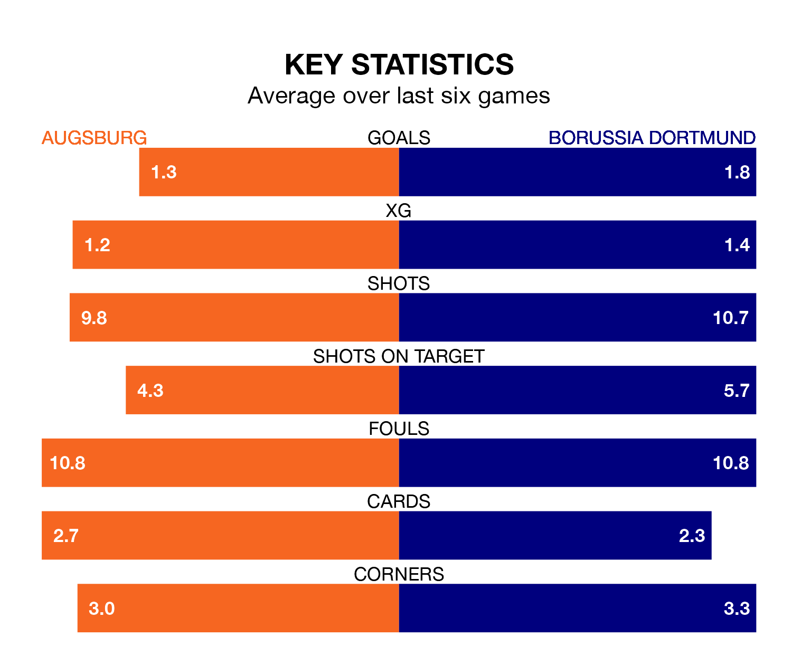

Borussia Dortmund are strong favourites to take all three points despite Augsburg's home advantage in Saturday's early match at the WWK Arena.
*Betting Company* are offering odds of 1.62 on Borussia Dortmund sealing the win, with the visitors sitting fifth in the Bundesliga table.
Augsburg, who are ninth in the league and eight points behind Borussia Dortmund, are priced at 4.75 to win. A draw is set at 4.33.
With 28 goals in 14 games so far this season, Borussia Dortmund are scoring more than average in the league with 2.0 goals per game. And they are conceding fewer than average, letting in 23 goals at a rate of 1.6 per game.
Augsburg, meanwhile, are below average scorers, with 1.6 goals per game, compared to a league average of 1.7. They have conceded 1.9 goals per game.
In the last 10 years, Augsburg and Borussia Dortmund have played each other on 20 occasions. Augsburg won three of them, Borussia Dortmund 12, and they drew five times.
On average, Augsburg scored 1.4 goals and Borussia Dortmund 2.4 in those matches.
Their last meeting was on May 21, when Borussia Dortmund won 3-0 away.
The visitors' Julian Brandt is the league's most creative player, racking up seven assists in 14 appearances so far this season.
For the home team, Ermedin Demirović has set up the most goals, having laid on five assists in 14 games.
Augsburg are in mixed form in the Bundesliga, with two wins and three draws from their last six games.
With a win and two draws over that period, Borussia Dortmund's form is worse – they have taken five points from 18, compared to Augsburg's nine.
Augsburg's last match was on December 9, a 2-0 loss against Werder Bremen.
Borussia Dortmund lost 3-2 against RB Leipzig last time out, also on Saturday, with Niclas Füllkrug and Niklas Süle on the scoresheet.
